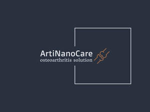

Trade Mark Journal No.2025/030 25 July 2025
UK00004196801 29 April 2025 (5)

- Class 5
- Pharmaceutical preparations for treating arthritis; Cardiovascular drugs for use in treating hypertension; Medicines for the treatment of cardiovascular and cerebrovascular diseases; Cardiovascular drugs used in angina pectoris; Pharmaceutical preparations for the treatment of osteoporosis; Pharmaceutical preparations for treating rheumatological diseases; Pharmaceutical preparations for the prevention of osteoporosis; Cardiovascular drugs used in treating arrhythmias; Pharmaceutical preparations for the treatment of bone fractures; Cardiovascular drugs used in treating congestive heart failure (CHF); Medicines for the treatment of gastrointestinal diseases; Pharmaceutical preparations for the treatment of cardiovascular disease; Pharmaceutical preparations for the treatment of bone diseases; Pharmaceutical products for the treatment of bone diseases; Pain relieving creams; Pharmaceuticals for the treatment of erectile dysfunction; Cardiovascular pharmaceuticals; Cardiovascular drugs used in myocardial infarction; Anti-inflammatories; Pharmaceutical preparations for the treatment of autoimmune diseases; Pain relief medication; Pharmaceutical preparations for the treatment of musculo-skeletal disorders; Pharmaceutical preparations for the treatment of Musculo-skeletal disorders; Acetaminophen [for relief of pain]; Pharmaceutical preparations for the prevention of autoimmune diseases; Non-steroidal anti-inflammatory drugs; Pharmaceutical preparations for the treatment of gout; Cardiovascular drugs used in treating shocks; Compounds for treating correlated pulmonary syndromes; Pharmaceutical for the treatment of erectile dysfunction; Pharmaceutical preparations for treating skeletal diseases; Compounds for treating respiratory diseases; Constipation (Medicines for alleviating -); Medicines for alleviating constipation; Pharmaceutical preparations for the treatment of kidney diseases; Anti-inflammatory analgesic plasters; Pharmaceutical preparations for the treatment of inflammatory diseases; Pharmaceutical preparations for the prevention of autoimmune disorders; Pharmaceutical preparations for the prevention of inflammatory diseases; Pharmaceutical preparations for the treatment of autoimmune disorders; Pharmaceutical preparations for the treatment of diseases of the musculo-skeletal system; Pharmaceutical preparations for treating allergic rhinitis; Pharmaceutical preparations for the prevention of diseases of the musculo-skeletal system; Inhaled pharmaceutical preparations for the treatment of respiratory diseases and disorders; Dysmenorrhea treatment preparations; Analgesics ; Acne medications; Pills for tinnitus treatment; Pharmaceutical preparations for the prevention of ocular diseases; Medicines for treating intestinal disorders; Pharmaceutical preparations for the treatment of kidney disorders; Pharmaceutical preparations for treating diabetes; Pharmaceutical preparations for the prevention of inflammatory disorders; Pharmaceutical preparations for treating the symptoms of radiation sickness; Pharmaceutical preparations for the treatment of inflammatory disorders; Biopharmaceuticals for the treatment of cancer; Pharmaceutical preparations for treating hypertension; Pharmaceutical preparations for inhalation for the treatment of pulmonary hypertension; Pharmaceutical products for treating respiratory diseases; Pharmaceutical preparations for treating respiratory diseases; Compounds for treating cancer.
ARTINANO CARE LIMITED